皮膚科急症：從紅旗徵象到進一步診斷
原標題：Dermatology Emergency（正式講題待補）
2026 年 11 月 1 日｜FASAVA 2026｜場次 04（皮膚科）
資料來源標記：
📸 現場 課堂現場投影片照片
💡 補充 整理者補充（教科書與文獻，非講者內容）
✍️ 筆記 現場筆記
目前有 13 張現場照片。第 9 節是整理者先放的教科書架構，講者的投影片到了之後再修正或替換。
目前有 13 張現場照片。第 9 節是整理者先放的教科書架構，講者的投影片到了之後再修正或替換。
⭐ 本場重點
- 講者的處理順序：紅旗 → 穩定 → 針對性病史 → 型態推理 → 進一步檢查
- 先判斷是不是急症、先穩定全身狀況，再處理皮膚
- 病史與病灶型態就能把鑑別診斷縮小，檢查是最後一步
- 紅旗：「以前從沒發生過」、快速進展、表皮脫落或壞死、黏膜侵犯、不褪色病灶、疼痛與外觀不成比例、發燒精神差
- 穩定順序：ABC → 及早止痛 → 先處理全身不穩定 → 才做診斷；皮膚病一開始是次要的
- 病史一定要問用藥，包括跳蚤／心絲蟲預防藥與保健品，還有疫苗、外用產品、美容、飲食改變
- 一開始不要追求確定診斷：抓主要病灶型態（4 種）＋部位，記得打開嘴巴看
- 黏膜、鼻鏡、耳廓、足墊有病灶 → 想 EM／SJS／TEN、AISBD、表淺壞死性皮膚炎，需要切片
- 熱點不是真正的急症：剃毛、清潔、保持乾燥＋止癢止痛＋處理誘因
- EM／SJS／TEN 罕見但最嚴重，TEN 死亡率高；很多找不到原因，也可能與藥物有關，要快速辨識、立即處置
- EM：類靶狀／環狀病灶（不是真正的靶狀但很像），好發腹側、腋下、鼠蹊，± 黏膜侵犯、全身症狀
場次資訊
▾- 主題：皮膚科急症（dermatology emergency）。
- 講者姓名、正式講題、場次時間與廳別：照片上沒有，待補。
1. 處理皮膚急症的 5 個步驟
▾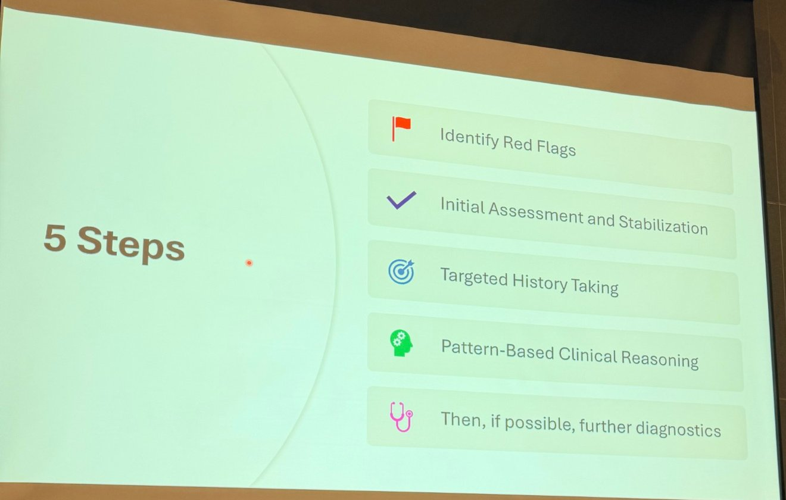
| 步驟 | 📸 投影片 | 💡 實際上要做的事 |
|---|---|---|
| 1 | Identify Red Flags 辨認紅旗徵象 | 先判斷是不是急症：有沒有全身症狀、黏膜侵犯、Nikolsky 陽性、劇痛、快速擴散、紫斑或壞死（見第 2 節）。 |
| 2 | Initial Assessment and Stabilization 初步評估與穩定 | 先處理會致命的問題：呼吸道、循環、休克、疼痛、體溫、脫水（見第 3 節）。皮膚大面積缺損等同燒燙傷，要考慮體液與蛋白質流失。 |
| 3 | Targeted History Taking 針對性病史 | 發生速度與進展、用藥（包括預防藥與保健品）、外用產品與美容、疫苗、飲食、旅遊與接觸動物（見第 4 節）。 |
| 4 | Pattern-Based Clinical Reasoning 依型態做臨床推理 | 看病灶型態與分布：糜爛潰瘍、水泡、紫斑、壞死、腫脹；是否在黏膜皮膚交界、耳尖與足墊、臉部。型態加分布就能縮小鑑別診斷（見第 5 節）。 |
| 5 | Then, if possible, further diagnostics 可行的話，再做進一步檢查 | 細胞學、切片、培養、血液與凝血檢查。不必等檢查結果才開始穩定與治療（見第 6 節）。 |
第 5 步寫著 if possible：在急診現場，病患的狀態和飼主的經費不一定允許完整檢查，前四步本身就要能帶出合理的處置。
2. 紅旗徵象
▾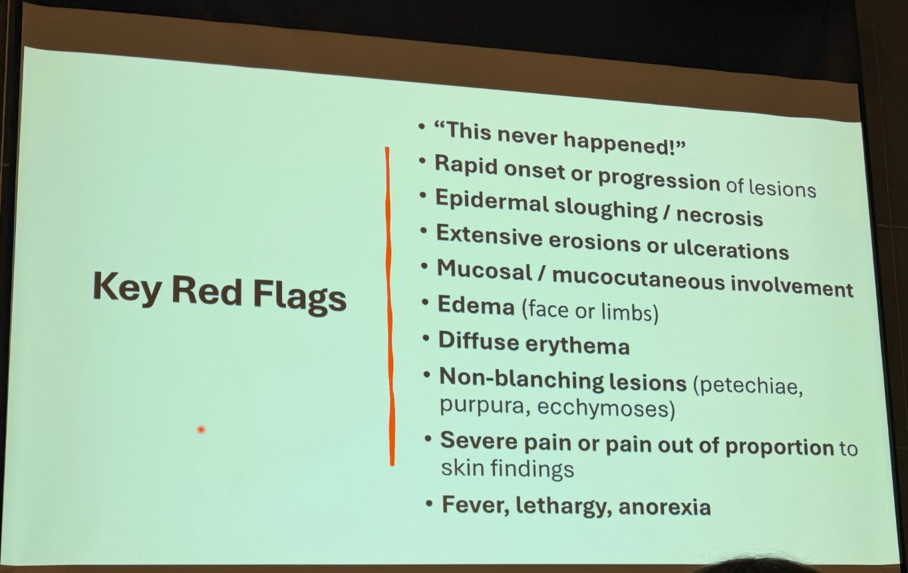
📸 出現下列任一項，就要當作皮膚急症處理：
| 📸 紅旗 | 💡 要想到什麼 |
|---|---|
| 「以前從沒發生過！」（"This never happened!"） | 新發生、和以往慢性皮膚病不一樣的急性變化，要當成新問題，不要直接歸因於原本的過敏或膿皮症。 |
| 病灶快速發生或快速進展 | 藥物反應（TEN／SJS／EM）、壞死性筋膜炎、血管炎。 |
| 表皮脫落／壞死 | TEN、燒燙傷、血管炎、壞死性感染；可檢查 Nikolsky 徵象（輕推表皮就滑脫）。 |
| 大範圍糜爛或潰瘍 | TEN／SJS、天疱瘡、類天疱瘡；會造成體液與蛋白質流失、續發感染。 |
| 黏膜／黏膜皮膚交界侵犯 | 口腔、眼、生殖器、肛門：SJS／TEN、尋常型天疱瘡、類天疱瘡。 |
| 水腫（臉部或四肢） | 血管性水腫／過敏、幼犬蜂窩性組織炎（臉）；血管炎或蜂窩性組織炎（四肢）。 |
| 瀰漫性紅斑 | 藥物反應早期、過敏、毒性休克。 |
| 不褪色病灶（點狀出血、紫斑、瘀斑） | 血管炎或凝血問題（血小板低下、DIC）。用玻片壓：紅斑會褪色，出血不會。 |
| 劇痛，或疼痛與皮膚外觀不成比例 | 壞死性筋膜炎：外觀還不嚴重時就非常痛。 |
| 發燒、精神沉鬱、食慾不振 | 全身性疾病或敗血症，皮膚只是其中一部分。 |
3. 初步評估與穩定
▾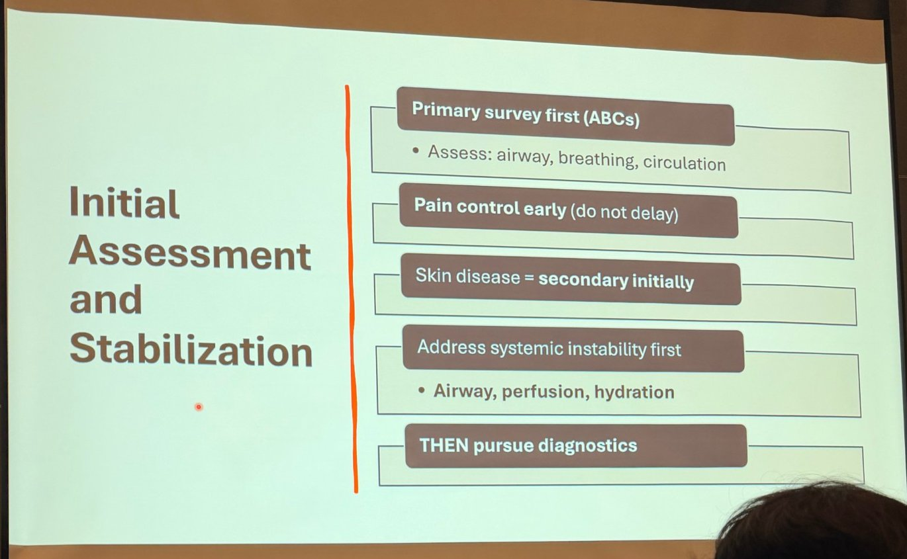
📸 依序：
- 先做初級評估（ABC）：評估呼吸道、呼吸、循環。
- 及早止痛（不要拖延）。
- 皮膚病一開始是次要的。
- 先處理全身性的不穩定：呼吸道、灌流、水合狀態。
- 然後才進行診斷檢查。
皮膚急症常見的不穩定來源：臉部與頸部水腫壓迫呼吸道（血管性水腫、幼犬蜂窩性組織炎）、休克（過敏性休克、敗血症、毒性休克）、大面積皮膚缺損造成的體液與蛋白質流失（比照燒燙傷）。止痛常用 opioid；診斷未明、腎臟灌流不確定時，NSAID 先保留。
4. 針對性病史
▾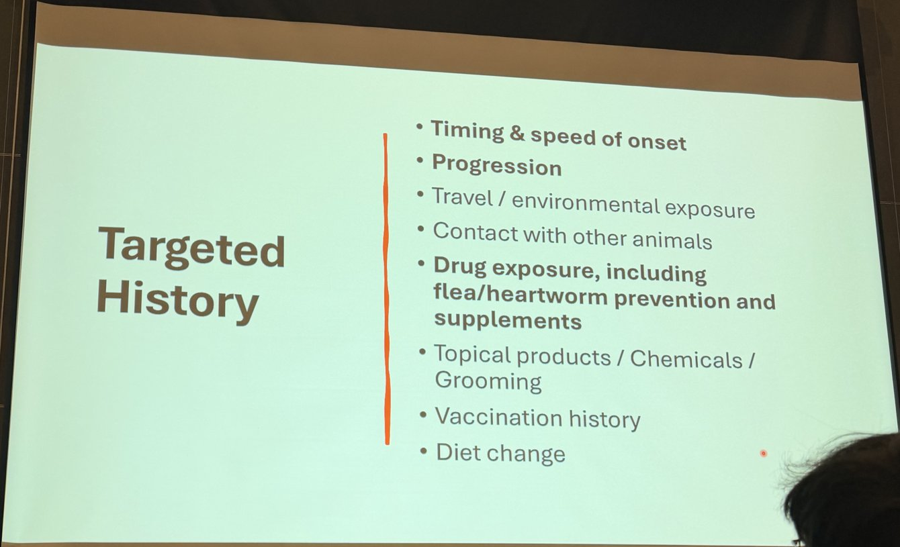
| 📸 要問的項目 | 💡 為什麼問 |
|---|---|
| 發生的時間與速度 | 數小時到數天內出現，傾向藥物反應、感染、過敏、燒燙傷；慢性病灶急性惡化則另作考慮。 |
| 進展 | 每小時都在擴大要想到壞死性筋膜炎；TEN 也會在數天內擴大。 |
| 旅遊／環境暴露 | 蜱媒疾病（血管炎）、熱源或化學物、蛇與昆蟲咬傷、蠅蛆。 |
| 接觸其他動物 | 打架咬傷與膿瘍、傳染性疾病；同住動物是否也有症狀。 |
| 用藥，包括跳蚤／心絲蟲預防藥與保健品 | 藥物反應最重要的線索。飼主常不把預防藥和保健品當成「藥」，要主動問。 |
| 外用產品／化學品／美容 | 接觸性或刺激性皮膚炎、化學灼傷；美容後的毛囊炎／癤病、吹風機燙傷。 |
| 疫苗史 | 疫苗後的過敏反應、注射部位或疫苗相關的缺血性皮膚病（血管炎）。 |
| 飲食改變 | 食物不良反應；少數藥物性或過敏性反應也可能和新食物、零食有關。 |
5. 依型態做臨床推理
▾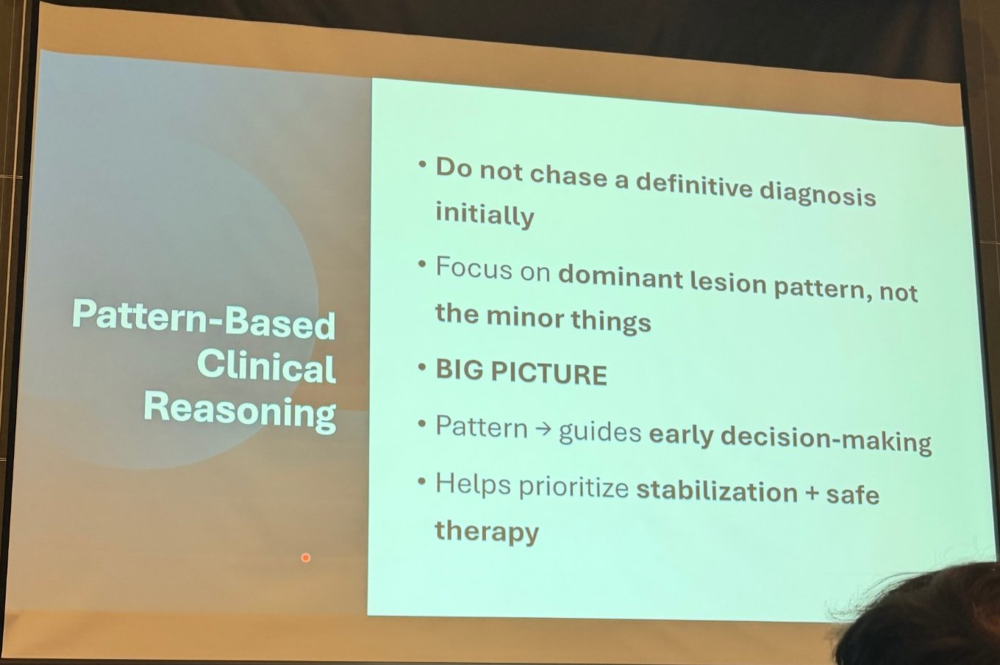
- 📸 一開始不要急著追確定診斷。
- 專注在主要的病灶型態，不要被小細節帶走。
- 看大局（BIG PICTURE）。
- 型態 → 引導早期決策。
- 幫助排出優先順序：穩定病患＋安全的治療。
四種關鍵型態與部位
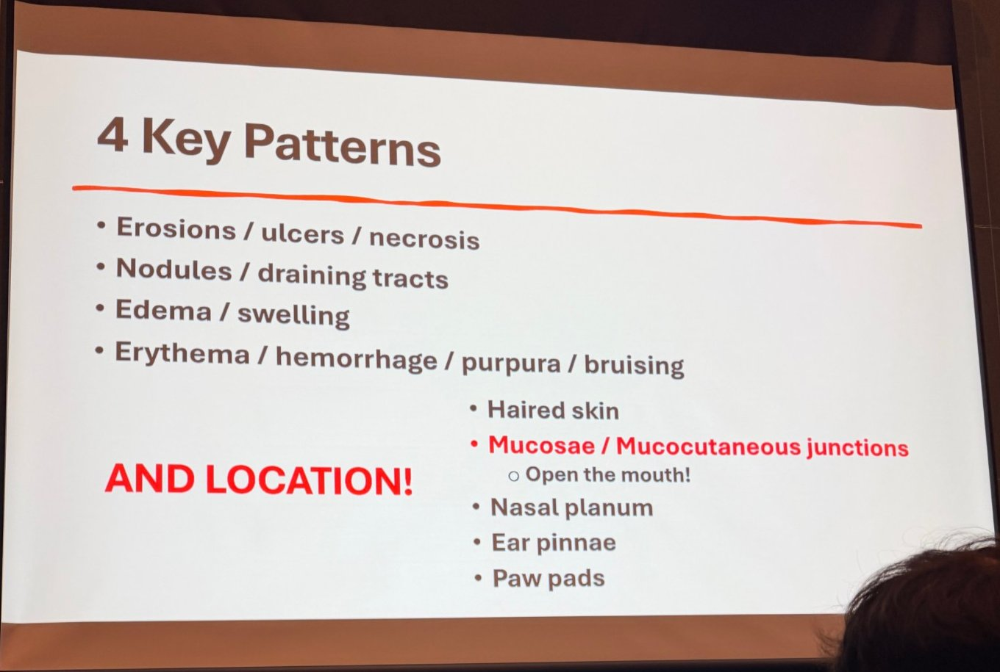
| 📸 四種型態 | 📸 還要看部位 |
|---|---|
|
1. 糜爛／潰瘍／壞死 2. 結節／瘻管（draining tracts） 3. 水腫／腫脹 4. 紅斑／出血／紫斑／瘀青 |
有毛皮膚 黏膜／黏膜皮膚交界：打開嘴巴看！ 鼻鏡 耳廓 足墊 |
部位本身就是線索：黏膜與黏膜皮膚交界傾向 SJS／TEN、EM、自體免疫水泡病；耳廓、足墊、尾尖是血管炎的好發處；鼻鏡要想到自體免疫與血管炎；足墊病灶也可見於表淺壞死性皮膚炎與 TEN。口腔病灶很容易漏掉，所以講者特別強調「打開嘴巴」。
四種型態的鑑別診斷
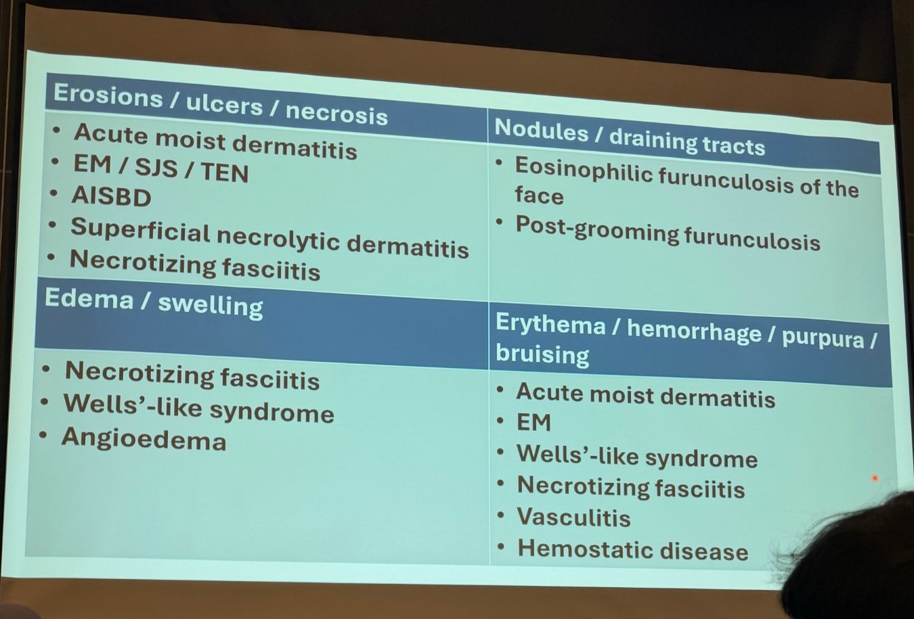
| 📸 型態 | 📸 鑑別診斷 |
|---|---|
| 糜爛／潰瘍／壞死 | 急性濕性皮膚炎（acute moist dermatitis，熱點） EM／SJS／TEN AISBD（自體免疫表皮下水泡性疾病） 表淺壞死性皮膚炎（superficial necrolytic dermatitis） 壞死性筋膜炎 |
| 結節／瘻管 | 臉部嗜酸性球性癤病（eosinophilic furunculosis of the face） 美容後癤病（post-grooming furunculosis） |
| 水腫／腫脹 | 壞死性筋膜炎 類 Wells 症候群（Wells'-like syndrome） 血管性水腫 |
| 紅斑／出血／紫斑／瘀青 | 急性濕性皮膚炎 EM 類 Wells 症候群 壞死性筋膜炎 血管炎 凝血疾病（hemostatic disease） |
💡 幾個比較少見的名詞：
- AISBD（autoimmune subepidermal blistering diseases）：大疱性類天疱瘡、黏膜類天疱瘡、後天性大疱性表皮鬆解症等，常侵犯黏膜與黏膜皮膚交界。
- 表淺壞死性皮膚炎（肝皮症候群）：足墊過度角化龜裂、口周與黏膜皮膚交界結痂糜爛；要找肝病、升糖素瘤，或 phenobarbital 長期使用。
- 臉部嗜酸性球性癤病：多為好奇的年輕大型犬，鼻樑與口鼻急性丘疹、結節、出血性病灶，常與昆蟲或蜘蛛叮咬有關；類固醇反應好。
- 美容後癤病：洗澡美容後 1–2 天在背部出現疼痛的丘疹、出血性瘻管，常伴發燒精神差；多為Pseudomonas aeruginosa（污染的洗毛精或器具），需要培養再選抗生素。
- 類 Wells 症候群（嗜酸性球性皮膚炎合併水腫）：急性紅斑、紫斑樣斑塊與水腫，常在胃腸症狀或用藥後出現；用玻片壓會褪色，可與真正的出血區分。
依部位的鑑別診斷
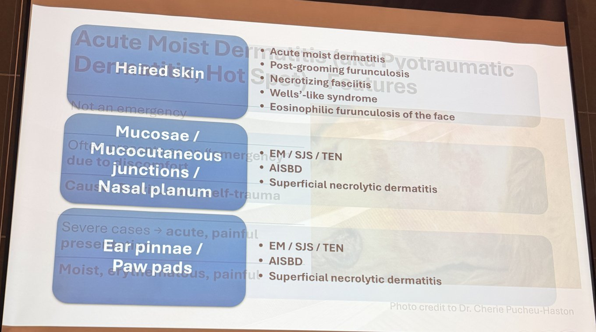
| 📸 部位 | 📸 鑑別診斷 |
|---|---|
| 有毛皮膚 | 急性濕性皮膚炎 美容後癤病 壞死性筋膜炎 類 Wells 症候群 臉部嗜酸性球性癤病 |
| 黏膜／黏膜皮膚交界／鼻鏡 | EM／SJS／TEN AISBD 表淺壞死性皮膚炎 |
| 耳廓／足墊 | EM／SJS／TEN AISBD 表淺壞死性皮膚炎 |
把兩張表合起來看：有毛皮膚的急症以感染、自我創傷與嗜酸性球反應為主；只要黏膜、鼻鏡、耳廓或足墊也有病灶，就要往 EM／SJS／TEN、AISBD、表淺壞死性皮膚炎想，這三類都需要切片。講者表上耳廓／足墊沒有列血管炎，但血管炎在型態表的「紅斑／出血／紫斑」那一格。
6. 進一步檢查
▾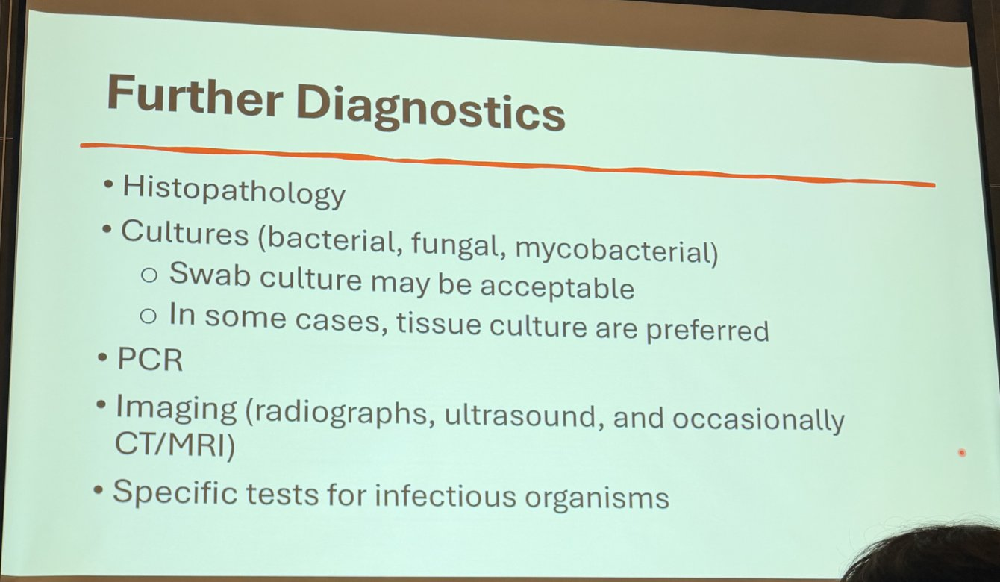
- 📸 組織病理（切片）
- 培養（細菌、黴菌、分枝桿菌）
- 拭子培養可能就足夠
- 有些情況組織培養比較好
- PCR
- 影像（X 光、超音波，偶爾 CT／MRI）
- 針對特定感染原的檢查
💡 補充：
- 先做的床邊檢查：壓印或膠帶細胞學，加上 CBC、生化、凝血檢查（紫斑、出血時一定要做）。
- 切片要早，可以的話在給類固醇之前；選新鮮、完整的病灶，水泡或糜爛邊緣，多取幾處。
- 組織培養比拭子好的情況：深層膿皮症、瘻管、結節、壞死性筋膜炎、懷疑分枝桿菌或深部黴菌，因為表面拭子多半只長出污染菌。
- 影像：壞死性筋膜炎看筋膜層積氣或積液、找異物；表淺壞死性皮膚炎看肝臟（蜂巢狀肝）與胰臟腫塊。
- 完整用藥史，回溯約 8 週。
7. 急性濕性皮膚炎（熱點）
▾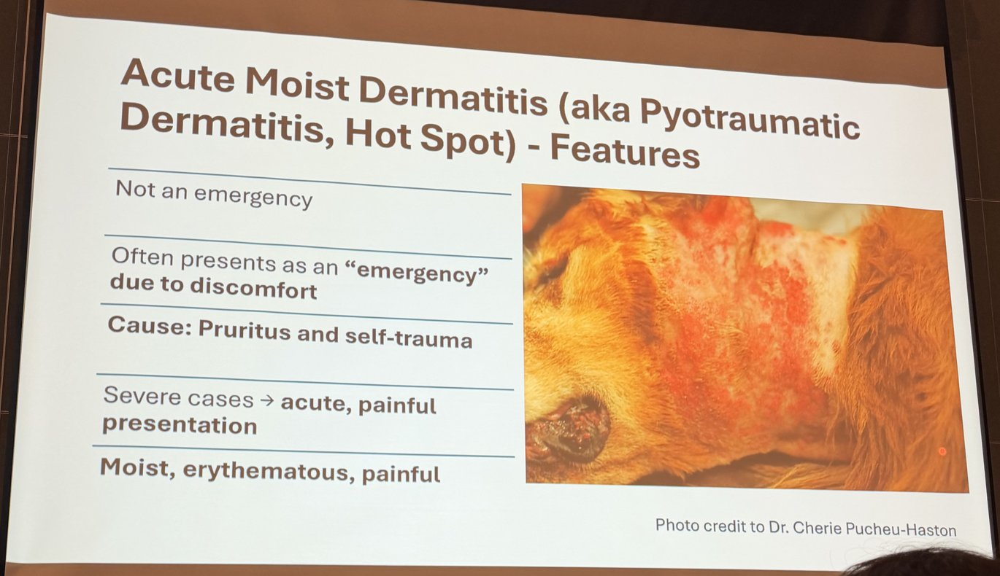
📸 又稱化膿創傷性皮膚炎、熱點：
- 不是真正的急症。
- 但常因為動物很不舒服，被當成「急症」帶來。
- 原因：搔癢與自我創傷。
- 嚴重時 → 急性、疼痛的表現。
- 病灶潮濕、紅斑、疼痛。
處置
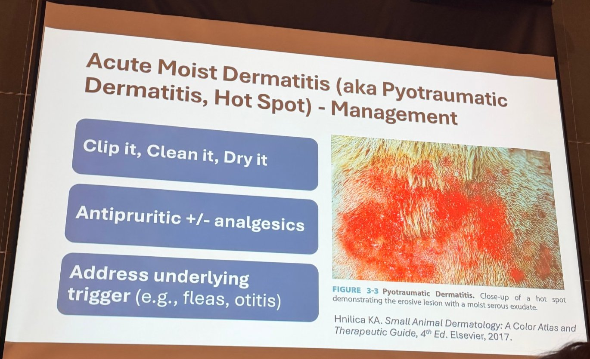
- 📸 剃毛、清潔、保持乾燥（Clip it, Clean it, Dry it）
- 止癢 ± 止痛
- 處理背後的誘因（例如跳蚤、耳炎）
實務上：病灶很痛，剃毛清潔常需要鎮靜；剃毛範圍要超過病灶邊緣，才看得到真正大小。止癢可用短期口服類固醇或 oclacitinib，加上伊莉莎白頭套防止繼續舔咬。誘因除了跳蚤與耳炎，也要想到肛門腺、異位性皮膚炎、食物過敏。若病灶周圍有衛星丘疹或深層癤病，就不是單純熱點，而是深層膿皮症，需要全身性抗生素。
8. 多形性紅斑（EM）／Stevens-Johnson 症候群（SJS）／毒性表皮壞死溶解（TEN）
▾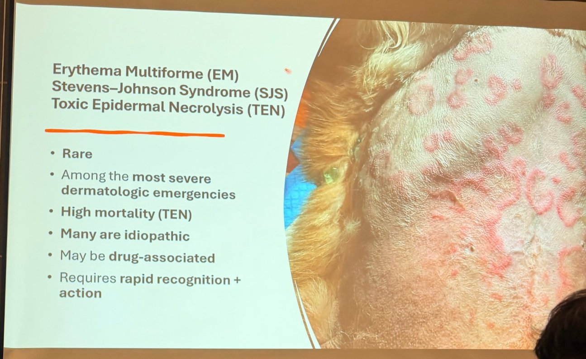
- 📸 罕見。
- 屬於最嚴重的皮膚急症之一。
- 死亡率高（TEN）。
- 很多是原發性（找不到原因）。
- 可能與藥物有關。
- 需要快速辨識＋立即處置。
多形性紅斑（EM）的表現
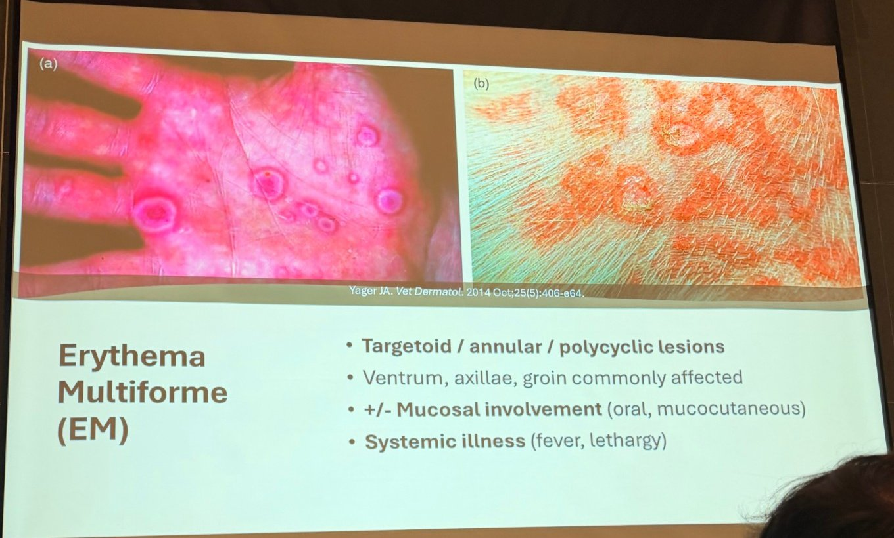
- 📸 類靶狀／環狀／多環狀病灶（targetoid / annular / polycyclic）
- 常見部位：腹側、腋下、鼠蹊
- ± 黏膜侵犯（口腔、黏膜皮膚交界）
- 全身性症狀（發燒、精神沉鬱）
✍️ Targetoid：不是真正的靶狀，但很像。
💡 人醫典型的靶狀病灶有三圈（中央暗紅或水泡、中間淡色水腫環、外圈紅斑）；犬的 EM 很少有這種完整三圈，多是中央較淡、往外擴張的環狀或多環狀紅斑，所以稱為「類靶狀」。
💡 人醫典型的靶狀病灶有三圈（中央暗紅或水泡、中間淡色水腫環、外圈紅斑）；犬的 EM 很少有這種完整三圈，多是中央較淡、往外擴張的環狀或多環狀紅斑，所以稱為「類靶狀」。
EM、SJS、TEN 的區分
💡 以表皮脫落面積與黏膜侵犯為主：
| 疾病 | 表皮脫落面積 | 特徵 |
|---|---|---|
| EM | 一般 <10%（EM major 有黏膜侵犯） | 環狀、類靶狀紅斑或斑塊；可輕可重，部分自行緩解 |
| SJS | <10% | 廣泛紅斑、斑點，黏膜侵犯，全身症狀 |
| SJS／TEN 重疊 | 10–30% | 介於兩者之間 |
| TEN | >30% | 大片表皮壞死脫落、Nikolsky 陽性、劇痛、發燒；預後差 |
💡 常被提到的藥物：sulfonamide（TMS）、β-lactam、cephalosporin、phenobarbital、NSAID 等；也可能與感染有關。處置要點：停掉所有非必要藥物（之後也避免同類藥物）、及早切片確診、比照燒燙傷的支持療法（輸液、白蛋白、止痛、傷口照護、營養支持與餵食管）、預防續發感染。免疫調節（如類固醇、IVIG、cyclosporine）的效益在犬貓仍不確定。
9. 常見皮膚急症一覽（整理者補充）
▾💡 整理者補充的教科書架構。劑量請以院內處方集為準。
| 疾病 | 線索 | 初步處置 |
|---|---|---|
| TEN／SJS／多形性紅斑（藥物反應） | 近期用藥（TMS、β-lactam、phenobarbital 等）；疼痛性糜爛、黏膜侵犯、Nikolsky 陽性 | 停掉所有非必要藥物；切片；比照燒燙傷照護：輸液、止痛、傷口照護、餵食管。TEN 預後保留。 |
| 壞死性筋膜炎（Streptococcus canis、混合感染） | 疼痛與腫脹不成比例、快速擴散、皮膚變暗、敗血症 | 緊急外科清創＋廣效靜脈抗生素。避免單用 fluoroquinolone（與鏈球菌毒性休克有關）。 |
| 過敏性休克／血管性水腫 | 臉部腫脹、蕁麻疹、嘔吐、虛脫 | Epinephrine 0.01 mg/kg IM、靜脈輸液、抗組織胺 ± 類固醇；維持呼吸道暢通。 |
| 幼犬蜂窩性組織炎（puppy strangles） | 4 月齡以下幼犬；口鼻與眼瞼腫脹、下頜淋巴結腫大 | 免疫抑制劑量 prednisolone；有續發感染再加抗生素。及早治療可減少疤痕。 |
| 燒燙傷（熱、化學、電） | 損傷常在 24–72 小時後才完全顯現 | 超過約 20% 體表面積要輸液；止痛、分階段清創、注意敗血症。 |
| 血管炎 | 耳尖、足墊、尾巴、黏膜的打孔狀潰瘍 | 切片；找誘因：藥物、疫苗、蜱媒疾病（Rickettsia、Ehrlichia）、腫瘤。 |
| 尋常型天疱瘡／大疱性類天疱瘡 | 黏膜交界處的水泡與糜爛 | 切片；免疫抑制；支持療法。 |
| 深層膿皮症合併敗血症（如德國狼犬癤病） | 瘻管、發燒 | 先培養再給全身抗生素；傷口照護。 |
| 咬傷中毒（蛇、棕色遁蛛） | 快速腫脹、組織壞死 | 有抗毒血清就用；止痛；檢查凝血。 |
| 蠅蛆症 | 傷口或糾結毛髮下有蛆 | 剃毛、移除幼蟲、清創；處理休克。 |
| 無菌性嗜中性球皮膚病 | 與 carprofen 有關 | 停藥、切片。 |
10. 課堂內容
▾課堂進行中，後面的投影片會陸續補上，並依講者內容修正第 9 節。